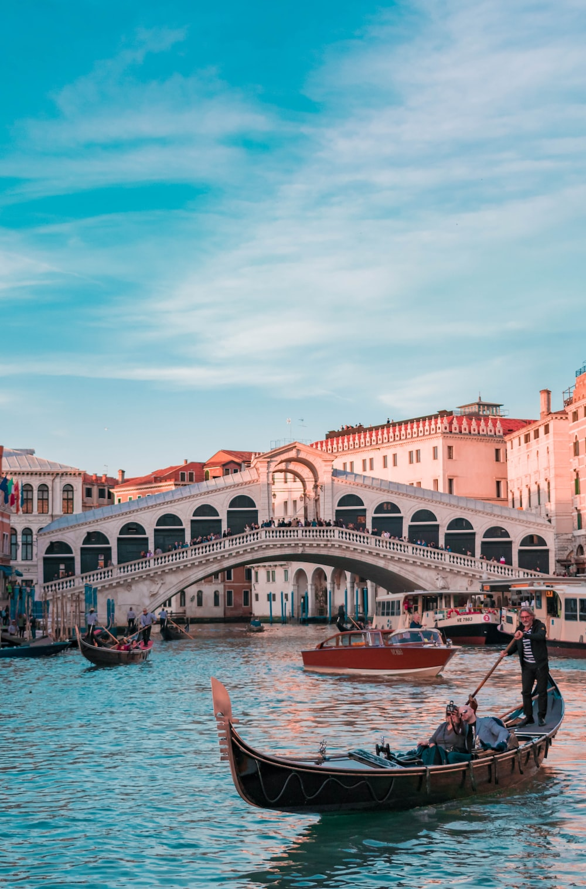
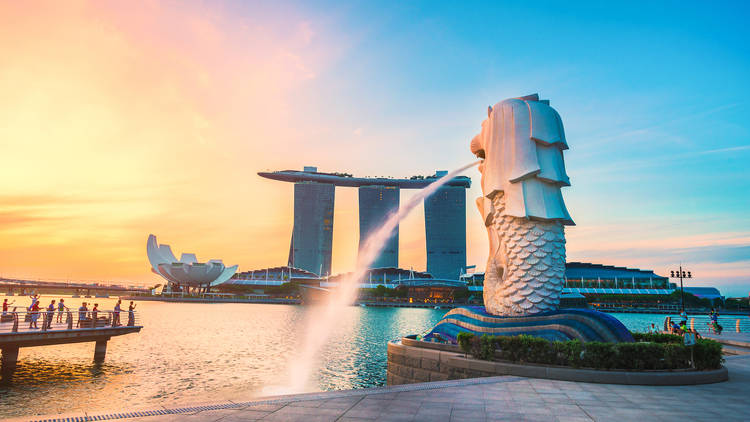

Welcome to My places.
JAPAN

Japan is an island country in East Asia. It is situated in the northwest Pacific Ocean and is bordered on the west by the Sea of Japan, extending from the Sea of Okhotsk in the north toward the East China Sea, Philippine Sea, and Taiwan in the south.
I wanted to visit this place is because the technology is very advanced and It has wondrous places and amazing sights to see.
Here are some things that I want to do when I come to Japan:


Italy

Italy, a European country with a long Mediterranean coastline, has left a powerful mark on Western culture and cuisine. Its capital, Rome, is home to the Vatican as well as landmark art and ancient ruins. Other major cities include Florence, with Renaissance masterpieces such as Michelangelo’s "David" and Brunelleschi's Duomo; Venice, the city of canals; and Milan, Italy’s fashion capital.
I wanted to visit this place because there are different kinds of art. The place is also sparkling with azure waters that can be seen everywhere, and you can experience chilling on a boat while visiting other places. Here are some things that I want to do when I come to Italy:


London

London, the capital of England and the United Kingdom, is a 21st-century city with history stretching back to Roman times. At its centre stand the imposing Houses of Parliament, the iconic ‘Big Ben’ clock tower and Westminster Abbey, site of British monarch coronations. Across the Thames River, the London Eye observation wheel provides panoramic views of the South Bank cultural complex, and the entire city.
London worthwhile to visit for me because they have a clean and sophisticated area, they also have great and famous buildings that is worthwhile to visit. London is also full of character, offering incredible sights and a bustling nightlife, making it a trendy tourist destination. Here are some things that I want to do when I come to London:

in fashionable shops


Singapore

Singapore, city-state located at the southern tip of the Malay Peninsula, about 85 miles (137 kilometres) north of the Equator. It consists of the diamond-shaped Singapore Island and some 60 small islets; the main island occupies all but about 18 square miles of this combined area. The main island is separated from Peninsular Malaysia to the north by Johor Strait, a narrow channel crossed by a road and rail causeway that is more than half a mile long. The southern limits of the state run through Singapore Strait, where outliers of the Riau-Lingga Archipelago—which forms a part of Indonesia—extend to within 10 miles of the main island.
Singapore is one of the places I wanted to visit as a child because this is the country where my mother worked abroad to save money for our tuition. She also expresses that the area in that country is very clean and they have lesser traffic because of their strict rules to follow. Here are some things that I want to do when I come to Singapore:


France

France, in Western Europe, encompasses medieval cities, alpine villages and Mediterranean beaches. Paris, its capital, is famed for its fashion houses, classical art museums including the Louvre and monuments like the Eiffel Tower. The country is also renowned for its wines and sophisticated cuisine. Lascaux’s ancient cave drawings, Lyon’s Roman theater and the vast Palace of Versailles attest to its rich history.
I wanted to visit this place because it is the city of love where couples gather just to have a sight of places that can be seen only in France. They also have cuisines that becamame famous for their country, and the vibe and scenery in their place is also breathtaking and wonderful. Here are some things that I want to do when I come to France:


---> Summary <---

My top 5 places are:
Food recommendations to try for each country:
- Japan - Omurice (Omelette Rice)
- Italy - Risotto
- London - Bolognese Spaghetti
- France - Croissant and Baguette
- Singapore - Chili Crab